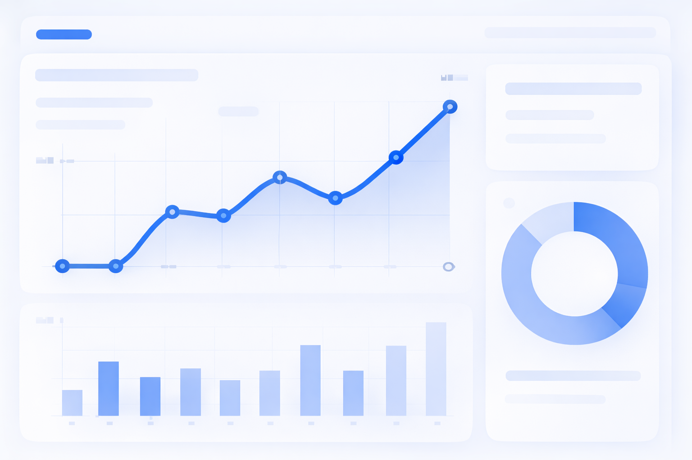
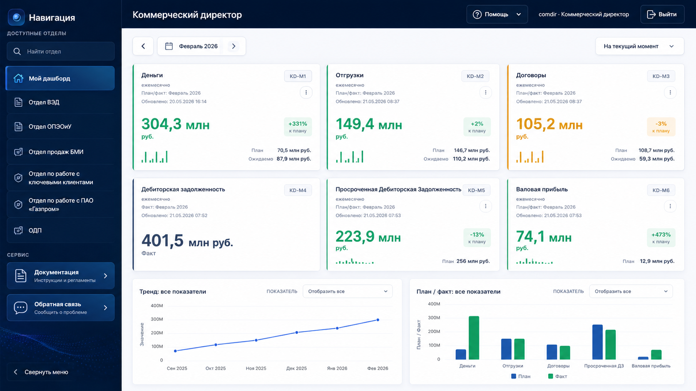

Выбор подразделения, поиск отдела и сервисные кнопки.
⌕
Руководство пользователя
Обучалка по управленческому дашборду
Здесь собраны первые действия, объяснение блоков на странице дашборда, правила чтения показателей и ответы на частые вопросы.

Быстрый старт
Регистрация, вход и первые действия
Как читать показатели
План, факт, динамика и статусы
Частые вопросы
Доступ, данные и обратная связь
01
Как зарегистрировать аккаунт
Аккаунт создаётся через заявку администратору. После подтверждения вы сможете войти в дашборд.
- Откройте страницу входа. Нажмите ссылку Зарегистрироваться внизу карточки входа.
- Заполните заявку. Укажите логин, пароль и подразделение из списка.
- Дождитесь подтверждения. Администратор увидит заявку в админ-панели и одобрит доступ.
- Войдите в систему. После одобрения выберите пользователя, введите пароль и нажмите Войти в систему.
Вход в систему
Выберите пользователя и введите пароль
comdir — Коммерческий директор
ЗарегистрироватьсяСбросить пароль
02
Какие есть блоки на странице дашборда
Главная страница состоит из навигации, рабочей области, KPI-карточек, графиков, таблиц и сервисных кнопок.

Название текущего дашборда, меню помощи, админ-панель и выход.
Краткое состояние показателей: факт, план, процент выполнения и цветовой статус.
Графики, таблицы и подробные расшифровки открываются из карточек и вкладок.
03
Первый вход и выбор роли
После входа система открывает дашборд, доступный вашему пользователю и подразделению.
Запомнить меня
Если включить флажок на странице входа, можно продолжить работу по сохранённой сессии, пока действует токен.
Роль и отдел
Доступ к дашбордам зависит от роли пользователя и его подразделения, заданных администратором.
Сервис
Если что-то не сходится, используйте блок Обратная связь внизу левой панели.
04
Как читать показатели
Каждая карточка показывает не только число, но и смысл: насколько показатель близок к плану.
KPI
105,8%
К плану +483%
Показывает, какой KPI вы смотрите: деньги, отгрузки, договоры, текучесть и другие.
Основное крупное число. Это текущее значение показателя за выбранный период.
Подпись под фактом помогает понять, с чем сравнивается показатель.
Нижние столбики показывают динамику по времени и помогают быстро увидеть тренд.
05
Цвета и статусы
Цвет помогает быстро понять состояние KPI без чтения деталей.
Зелёный
Показатель в норме или лучше плана.
Жёлтый
Есть отклонение, требуется внимание.
Красный
Показатель существенно хуже плана.
Серый
Недостаточно данных для оценки.
06
Переход к деталям
Если нужен разбор, откройте карточку или таблицу: там видны строки, периоды и причины отклонения.
KPI-карточка
→
График
→
Таблица деталей
07
Частые вопросы
Короткие ответы на типовые ситуации.
Почему я не вижу нужный отдел?
Список отделов зависит от вашей роли и подразделения. Если доступ должен быть шире, отправьте заявку администратору или обращение через обратную связь.
Что делать, если данные кажутся неверными?
Сначала проверьте выбранный месяц и подразделение. Затем откройте детализацию показателя. Если расхождение осталось, отправьте обращение с описанием и скриншотом.
Почему показатель серый?
Серый статус обычно означает, что не хватает плана, факта или правил оценки для выбранного периода.
Как отправить файл или скриншот в обратной связи?
Откройте «Обратная связь», вставьте скриншот через Ctrl+V или перетащите файл прямо в поле описания.